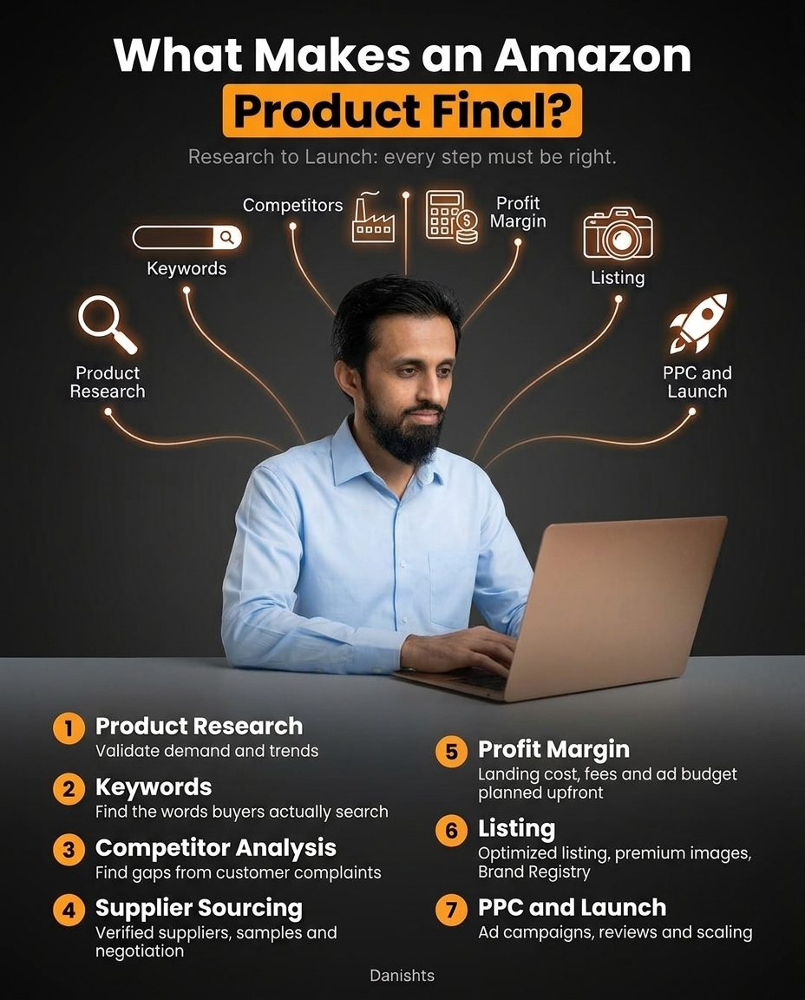

Redes de oficina y soporte IT

¿Oficina pequeña? Protege tus PC y tus datos
4 pasos sencillos para la seguridad y el respaldo de tus PC.
Leer más →
¿Tu CCTV está a salvo de hackers?
Riesgos de las cámaras IP y 6 soluciones sencillas.
Leer más →
CCTV: DVR vs NVR vs cámara IP
Qué sistema conviene a tu oficina, y la configuración adecuada según el tamaño.
Leer más →
Correo empresarial: Google Workspace vs Microsoft 365 vs cPanel
cPanel, Google Workspace o Microsoft 365: ventajas, desventajas y 4 reglas de configuración.
Leer más →
¿PC lenta? No siempre es el internet
Una lista sencilla de 6 pasos para cuidar tu PC dos veces al mes.
Leer más →
¿Qué hace segura una red de oficina? 6 reglas de IT
Auditoría de PC, ancho de banda, VLAN, puntos de acceso, respaldo y dominio AD.
Leer más →
Hay internet, pero los usuarios de WiFi no pueden imprimir
Por qué ocurre cuando existen dos redes, y la solución sencilla.
Leer más →
LAN vs WiFi en la oficina: ¿qué debe ir por cable?
Qué dispositivos van por LAN, cuáles por WiFi, y por qué.
Leer más →Amazon Private Label

ACoS vs TACoS: ¿cuál es la diferencia?
Dos números, dos preguntas distintas, con un ejemplo sencillo.
Leer más →
Amazon PPC: el costo que se siente a ciegas
Campañas automáticas vs manuales, y por qué planificar primero el presupuesto.
Leer más →
Cómo preparar las imágenes de tu listado de Amazon
Reglas de la imagen principal, 5 tipos de imagen y una lista de 6 pasos.
Leer más →
Por qué algunos productos de Amazon fallan en la investigación
Qué etapa puede detener un producto, y la revisión final antes de pagar.
Leer más →
¿Qué hace que un producto de Amazon sea el definitivo? 7 pasos
De la investigación del producto al PPC y al lanzamiento.
Leer más →
Negociación con proveedores de Amazon: habla con 5 a 8 proveedores
Cómo comparar proveedores y dejar las condiciones por escrito.
Leer más →
Amazon PPC: por qué todo lanzamiento nuevo necesita un plan
Presupuesto, puja y ACoS explicados con un ejemplo sencillo.
Leer más →